Night-time autonomous upkeep夜間の自律保守
While people sleep, agents check systems, fix small issues and leave a clear report for the morning.人が寝ている間に、エージェントが点検・小さな修正を行い、朝には分かりやすい報告を残します。
For the National AI Office · Rwandaルワンダ国家AI庁の皆さまへ
I run a 60-person, fully remote advertising company with a family of AI agents that remember, review each other, and finish work on their own. I want to bring that operating model to Rwanda's public sector. 約60名・完全リモートの広告会社を、記憶を持ち、互いにレビューし、最後まで自走するAIエージェントのチームと一緒に経営しています。この運用のかたちを、ルワンダの行政の現場へ持ち込みたいと考えています。
Background: AI-generated image of Rwandan hills背景：AI生成のルワンダの丘の画像

01 · Profileプロフィール
Founder & CEO, replus asia ltd.replus asia ltd. 代表
replus asia ltd. is a performance-advertising company of about 60 people, working fully remote. We have run advertising in 13 countries, and delivered design and data work to clients in 10 countries and regions. We are one of 38 companies trading directly with Meta Japan. Next year I am moving our base to Rwanda. replus asia ltd. は約60名・完全リモートの運用型広告の会社です。広告配信の実績は13か国、デザイン・データの納品実績は10の国・地域にのぼります。Meta Japan と直接取引する38社のうちの1社です。来年、拠点をルワンダへ移す予定です。
Ads delivered in 13 countries広告配信 13か国 Design & data: 10 countries/regionsデザイン・データ納品 10の国・地域 Meta Japan direct partner (1 of 38)Meta Japan 直取引38社の1社 Relocating to Rwanda next year来年ルワンダへ拠点移転
Design & data delivered toデザイン・データの納品先United States · Singapore · Taiwan · Japan · Netherlands · Canada · Isle of Man · China · Thailand · Philippinesアメリカ・シンガポール・台湾・日本・オランダ・カナダ・マン島・中国・タイ・フィリピン
¥3.6B (≈ RWF 33B) → ¥5.0B (≈ RWF 46B) → ~¥8.0B (≈ RWF 74B)36億円（≈ 約333億RWF）→ 50億円（≈ 約463億RWF）→ 約80億円（≈ 約740億RWF）
* RWF amounts are approximate, converted at ¥1 ≈ RWF 9.26 (October 2026).RWF の金額は概算です。換算レート：1円 ≈ 9.26 RWF（2026年10月時点）。
MissionミッションTurn the unknowns of advertising into knowns.広告の未知を既知に
Top 5 in Japan日本トップ5by Meta ad volume handledMeta広告取扱高で
Our members are based inメンバー在籍国Japan, Thailand, Myanmar, Pakistan, Bangladesh, Vietnam, Australia and more日本、タイ、ミャンマー、パキスタン、バングラデシュ、ベトナム、オーストラリアなど


02 · What I can do私ができること
I run 24 AI agents in parallel across local machines (MacBook Pro, Mac mini) and cloud VPS, using up to 40 billion tokens a week. I have tested close to 400 LLMs, including local models, and build with the dozen or so that proved reliable in real work — agent-driven development.ローカル（MacBook Pro・Mac mini）とクラウドのVPSを組み合わせ、24体のAIエージェントを並行運用しています。使用量は最大で週400億トークン。ローカルLLMを含め約400種類のLLMを検証し、実務で使えると判断した十数種類を使い分けて、エージェント駆動開発を行っています。
Client voicesお客様の声
“We finally earned the Meta Business Partner badge we had long aimed for. Our operations became far more stable and our growth much faster.”「念願だった「Metaビジネスパートナー」を無事取得することができました。運用の安定感と成長スピードが格段に向上したことを実感しており、リプラスさんの支援を非常に高く評価しています。」
“We used to have 20–30 account suspensions a month. Now it is down to about 2–3.”「かつては月に20〜30件のアカウント凍結・停止が発生していた状況でしたが、現在では月2〜3件程度にまで改善しています。」
“We had never heard of a service that grows your ad accounts together with you. That makes replus truly valuable. On our own, we would certainly have given up halfway.”「一緒にアカウントを育てていくというサービスは聞いたことがなかったので、リプラスさんの存在は貴重だと思います。弊社だけなら途中で間違いなく諦めていたと思います。」
“About five months after we started, we earned Meta Business Partner status. Since then, not a single account suspension.”「取り組みを開始してから5ヶ月間ほどで、Metaビジネスパートナーを取得することができました。今までのところアカウント凍結は一度も発生していません。」
“When we founded the company, earning Meta Preferred status was a dream.”「創業時はプリファード取得は夢のような話で、取得条件の出稿額は異次元の金額で、がんばろうと思うレベルではなかったです。」
Quotes from published client interviews on re-plus.asia, translated from Japanese.re-plus.asia に掲載の事例インタビューから引用しています。
Trusted byお取引企業
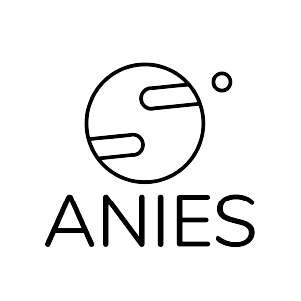
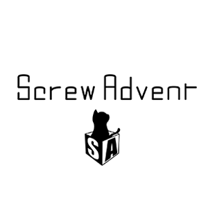
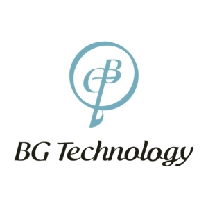
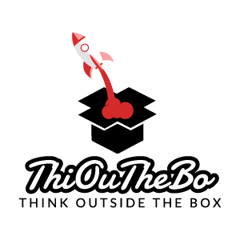
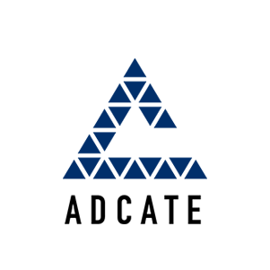
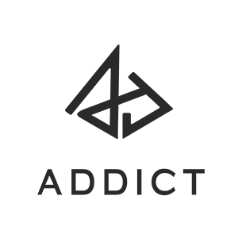
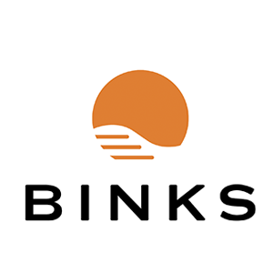
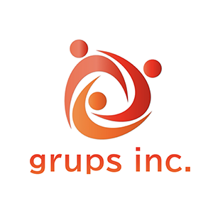
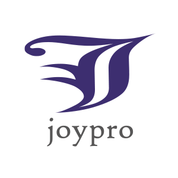
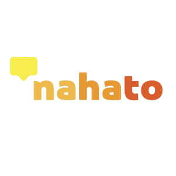
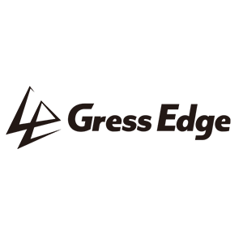
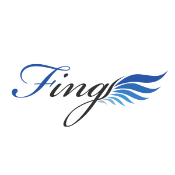
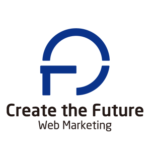
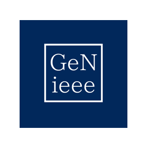
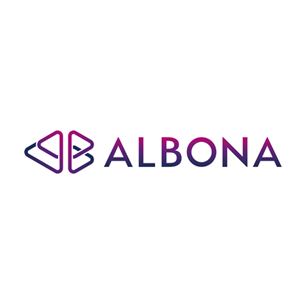
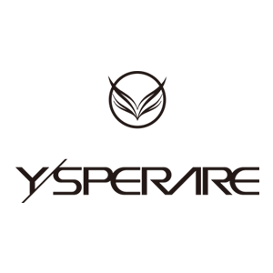
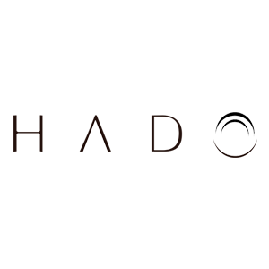
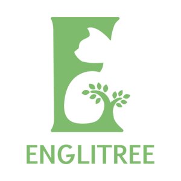
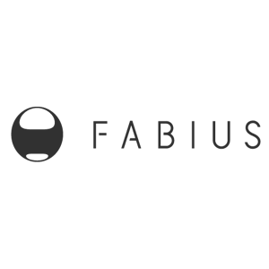
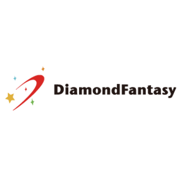
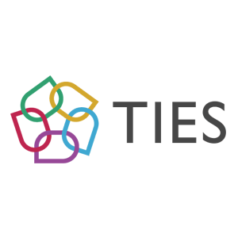
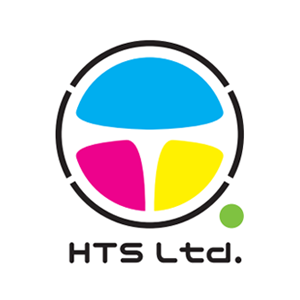
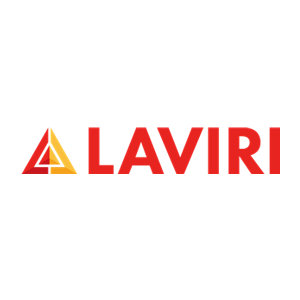
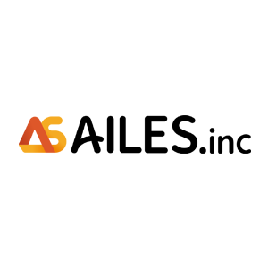
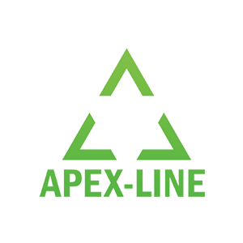
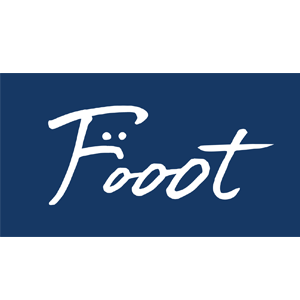
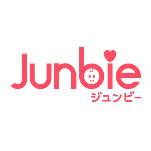
03 · The AI FamilyAIファミリー
While people sleep, agents check systems, fix small issues and leave a clear report for the morning.人が寝ている間に、エージェントが点検・小さな修正を行い、朝には分かりやすい報告を残します。
Work written by one AI is checked by AIs from different vendors. No one approves their own work.あるAIが書いたものを、別の会社のAIが確認します。自分の仕事を自分で承認しない仕組みです。
Agents plan, build, test and verify — and stop to ask a human before anything irreversible.計画・実装・テスト・検証まで自分で進め、取り消せない操作の前では必ず人に確認します。
04 · Stateful AIステートフルAI
Most AI forgets everything when the chat ends. Ours keeps decisions, context and lessons — so a team of AI staff can pick up tomorrow where it stopped today. We publish the building blocks as open source (MIT).多くのAIは会話が終わると全部忘れます。私たちのAIは、決めたこと・文脈・学びを持ち越すので、AIの職員チームが「昨日の続き」から仕事を始められます。その部品はオープンソース（MIT）で公開しています。

The map of how an AI family is organised and grows.AIファミリーを育てるための全体地図。
github.com/caty-ai/family-os ↗
Shared memory for many agents — one write path, sources always recorded.複数のAIが共有する記憶。書き込み口はひとつ、出どころを必ず記録。
github.com/caty-ai/family-memory-architecture ↗
Agents learn new skills safely: propose → owner approves → trial → review → adopt.AIが安全に成長する流れ：提案→承認→試行→レビュー→採用。
github.com/caty-ai/self-growth-loop ↗
Learns from failures and drives each task to a verified finish.失敗から学び、タスクを「検証済みの完了」まで運ぶ仕組み。
github.com/caty-ai/caty-agent-harness ↗
Collects AI news from 7 platform families into a daily paper for people and a feed for agents.7系統のサービスからAIニュースを集め、人向けの日刊紙とAI向けのフィードにします。
github.com/caty-ai/x-collector ↗
Watches long-running AI jobs, restarts them safely, and calls a human when needed.長時間動くAIの仕事を見守り、安全に再起動し、必要な時だけ人を呼びます。
github.com/caty-ai/sitter ↗05 · Productsプロダクト

Call your own AI agent with your voice — hands-free, like calling a colleague.自分のAIエージェントに声で電話する。同僚に電話するように、手を使わずに。
caty.talk ↗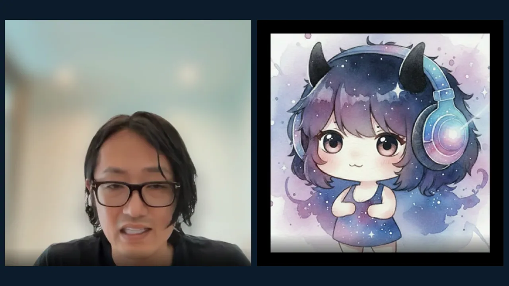
Bring your own AI agent into Google Meet and Zoom as a real voice participant.自分のAIエージェントを、Google Meet や Zoom に声で参加するメンバーとして呼べます。
Video: a live Google Meet call with our AI agent Caty動画：AIエージェント Caty との Google Meet 通話github.com/caty-ai/meetmate ↗06 · Selected work制作実績

A 69-second tourism-and-culture film produced end-to-end with AI: script, visuals, narration and music.台本・映像・ナレーション・音楽まで、AIで一貫制作した69秒の観光・文化プロモ動画。
Landscapes are AI-generated風景はAI生成
A bilingual fan-club site for a Kigali kids' dance crew on its road to a global stage.世界の舞台を目指すキガリの子どもダンスチームの、2言語ファンクラブサイト。
Open the site ↗サイトを開く ↗
A mobile-first page for a paid apprenticeship that trains young people in Rwanda through real projects.実案件を通じてルワンダの若者を育てる有給アプレンティス制度の、スマホ優先の求人ページ。
Open the page ↗ · Draft conceptページを開く ↗・企画案
Training videos presented by our AI character Caty, with her own voice — produced on an automated video line.AIキャラクター「Caty」が自分の声で案内する研修動画。自動の制作ラインで作っています。
07 · What we can do in Rwandaルワンダでできること
We place a small team of stateful AI agents on one real workflow in your office. They remember cases and decisions, are reviewed across models, and report daily. At day 90 you decide with the numbers in hand.実際の業務ひとつに、記憶を持つAIエージェントの小さなチームを配置します。案件や決定を覚え、別のモデル同士で確認し合い、毎日報告します。90日目に、数字を見て続けるかを判断いただけます。
We train Rwandan staff and young talent to run, review and improve AI agent teams themselves — so the capability stays in the country.ルワンダの職員や若い人材が、自分たちでAIエージェントのチームを動かし、確認し、改善できるように育てます。力が国内に残る形です。
AI-produced films and creative, delivered through performance advertising at scale — the work we already run in 13 countries.AIで作る映像やクリエイティブを、運用型広告で大きく届けます。13か国のお客さまにすでに提供している仕事です。
Rwandan creators post from their own accounts, and we amplify those posts with Meta partnership ads to Europe, Japan, Asia and North America. Results are measured in site visits, visa applications and tour bookings. Creators start earning right away.ルワンダのクリエイター自身のアカウントから、Metaのパートナーシップ広告で欧州・日本・アジア・北米へ発信します。成果はサイト訪問・ビザ申請・ツアー予約の数字で測ります。クリエイターは今すぐ収入を得られます。
How the money flowsお金の流れ
A voice AI that speaks Kinyarwanda, over the phone and WhatsApp, working with Meta.電話やWhatsAppで、キニヤルワンダ語で話せる音声AI。Metaと連携します。
08 · Contactお問い合わせ
Tell us which process you'd like AI to take on. We'll reply with a pilot outline.AIに任せてみたい業務を教えてください。パイロットの概要をお返しします。
Contact replus asia ltd.replus asia ltd. に問い合わせる